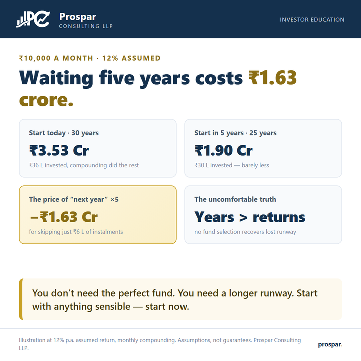

The most expensive word in investing is “later”.
Nobody decides against investing. They decide to start next year — after the bonus, after the wedding, after the market “settles”. Here is what that one word costs at ordinary numbers.

A ₹10,000 monthly SIP at a 12% assumed return becomes about ₹3.53 crore over 30 years. Start the identical SIP five years later and it becomes ₹1.90 crore. The five missing years contained only ₹6 lakh of instalments — yet they take ₹1.63 crore off the outcome, because the years you delete are the last and largest ones, where compounding does most of its work.
This is the asymmetry savers underestimate: money invested early is worth multiples of the same money invested late. The first year’s instalments compound for three decades; the final year’s barely compound at all. Which means the question “should I wait for a better time?” has a price tag, and the price tag is usually larger than any advantage the better time could deliver.
The practical answer is deliberately unheroic. Start with whatever amount survives your budget today — even a fraction of the target — and fix the size later with annual step-ups. A small SIP started now beats a perfect SIP started after the next bonus, every single time the arithmetic is run.
Run your SIP for your horizon — then shorten it by five years and watch what disappears.
{kind=link}
Illustration at 12% p.a. assumed return, monthly compounding. Assumptions, not guarantees. For education only — not advice. Prospar Consulting LLP.